FROM CHAT TO AGENT · 120 MIN
用 ChatGPT
完成真正的工作
从高效提问、文件分析，到工具连接、浏览器操作和 Codex AI Coding。面向财务、人资、研发、品保、供应链、制造的互动实战课程。
讲师 + 自学 双模式30个未来业务场景内置可运行工具
120 分钟现场授课路线
30附件原始场景，逐条覆盖
6部门场景章节
这门课要带走什么？
01 · 会问把任务说清楚
用短而清晰的指令开始，再通过上下文、追问和验证获得可靠结果。
02 · 会做从问答到交付
上传文件、分析数据、创建报告，理解Work的多步骤执行能力。
03 · 会建用AI创建工具
借助Codex生成、运行和测试可复用的业务小工具。
120分钟讲师路线
讲师提示：开场询问学员“你最近一次使用ChatGPT解决了什么工作？” 不逐个点名，可以请2人分享。结束时引导大家选择一个未来业务场景并完成入门练习。
个人学习进度
0 / 10 章
网页将进度保存在浏览器本地。不会上传文件、对话或学员信息到服务器。
01 · CHATGPT DESKTOP
桌面端快速上手
选工作方式、选模型、建项目，再把常用设置调顺手。菜单名称和可用功能以当前版本、账号及企业管理员配置为准。
以下为用户提供的桌面端真实截图，已按画面核对说明；点击图片可查看原图。截图反映提供时的界面与账号配置，不代表所有账号均有相同功能，也不代表已实际执行其中的任务。
1. 认识 Chat、Work 与 Codex
◌Chat
快速问答、写作、搜索、脑暴与文件理解。适合“我现在需要一个答案”。
◈Work
研究、分析、跨步骤执行并交付文档/报告等。适合“请帮我完成这项任务”。
⌘Codex
读代码、处理本地项目、运行命令、测试并开发工具。适合“请帮我做一个程序”。
先按任务选入口，而不是按“能力高低”排序。Chat适合交流与快速处理；Work偏向多步骤成果交付；Codex突出文件、代码、命令与变更检查，也能做研究和文档，不只用来编程。截图中ChatGPT顶部显示“聊天 / 工作”切换；Codex界面左上角显示产品名称，下方可选择项目和执行位置。
01 · Chat 与模式入口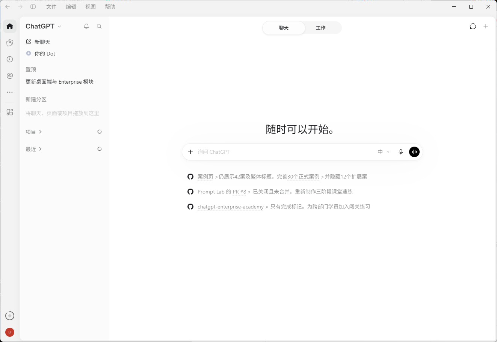
顶部“聊天”已选中；在输入框提出问题，或切到“工作”处理多步骤任务。
02 · Work 工作界面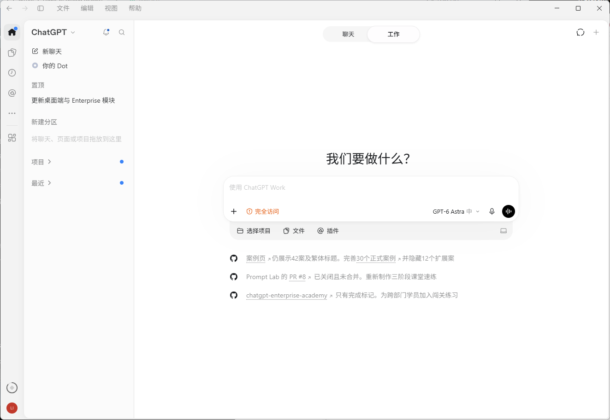
顶部切到“工作”；输入区可选择项目、文件和插件，右侧显示模型与思考程度。
03 · Codex 工作界面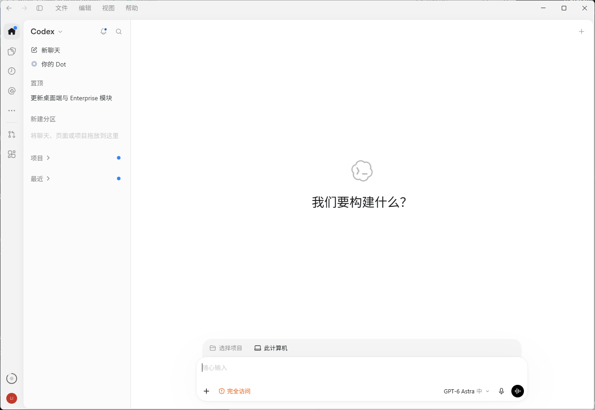
开始前核对项目与执行位置。图中为“此计算机”，不等于云端任务。
权限提醒：部分截图显示“完全访问”。这只是截图账号当时的状态，不是课堂推荐配置；练习应使用最小必要权限，不要照图开启完整访问权限。
2. 模型与思考程度，分两步选
先用账号默认模型完成一项熟悉的小任务，再按结果调整。Work / Codex通常从输入框下方进入模型与思考设置；若看到Power控制，可往Faster或Smarter调整，通过Advanced查看具体选项。Chat的菜单不一定相同。
先选模型：什么任务，适合什么模型？| 模型 | 适合的任务 | 工作示例与选择理由 |
|---|
| GPT-6 Luna明确、重复的任务 | 信息提取、分类、格式转换、结构化摘要。 | 把会议记录整理成待办表。规则清楚、处理量大时优先考虑。 |
| GPT-6.1 Terra写作与视觉理解 | 文案起草、看图解释、界面理解与受支持的应用操作。 | 起草培训通知，或解释软件报错画面。偏重表达、图像和操作任务。 |
| GPT-6.1 Sol多资料综合工作 | 整合多份材料、长任务、文档与代码协作。 | 综合计划、会议记录和进度表，形成工作方案。兼顾综合能力与用量。 |
| GPT-6 Astra复杂分析与权衡 | 多约束方案比较、困难推理、复杂研究或开发。 | 比较多个供应商方案，检查条件冲突与取舍。难题优先，简单任务不必默认选它。 |
适用于Work / Codex；业务示例为教学建议，并非效果承诺。这里只列当前官方重点介绍的模型，不逐一推断菜单中其他版本的能力。实际以账号可用模型为准。依据：OpenAI模型说明（2026-11-05核对）
再选思考强度：任务越复杂，越需要规划与核查| 强度 | 适合的任务 | 什么时候选 |
|---|
| Light / Low轻量 / 低 | 短文改写、简单问答、要求明确的小任务。 | 只调整一封通知的措辞，希望较快返回时。 |
| Medium中 | 需要简单规划、组织结构或比较的常规任务。 | 安排一次培训议程，需要同时考虑时间与顺序时。 |
| High高 | 多步骤、多份资料、需要交叉核对的分析。 | 对照多份计划梳理依赖，或检查方案是否漏项时。 |
| Extra High更高 | 约束多、取舍难、值得投入更多检查的任务。 | 前一轮仍遗漏关键约束，且资料已经充分时再提高。 |
- 起步怎么选：不确定就从账号默认值开始。官方建议Luna从High、Astra从Light开始，Sol从客户端默认值开始；不同模型的同名档位不能简单横向比较。
- Max：给单个困难任务更多推理时间，适合深度比速度更重要的少数问题。
- Ultra：通过子代理分工处理可拆分的大任务，不只是“想得更久”；Luna不支持Ultra。
- 先补资料，再加思考：缺少原始数据或判定标准，调高强度也不能补出事实。更高强度通常更慢、用量更多，不保证正确。
强度名称、可选档位及默认值随模型与版本变化。上面的任务对应关系是起步建议，不是固定规则；重要结论仍需人工核验。
04 · 模型选择菜单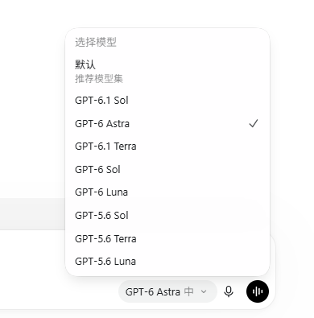
点击输入框旁的模型名称展开列表。截图当前选择GPT-6 Astra；可选列表会随版本和企业配置变化。
05 · 思考程度菜单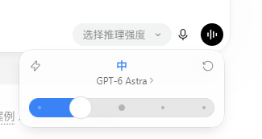
菜单标为“选择推理强度”，截图中为GPT-6 Astra、“中”。调节后核对显示值，不能只凭滑杆位置推断档位。
3. 一次性任务开对话，持续工作建项目
- 临时问答或单次改写：直接新建对话即可。
- 会持续推进、产生多个成果，或多项任务共用材料：先建项目；同一目标下，每个独立成果开一个对话。无关任务分开项目。
- 需要读取或修改本机文件：建立本地项目并选择专用文件夹，只放本次授权使用的材料。不要把整块磁盘或整个个人文档目录作为练习范围。
- 开始前交代目标、输入文件、输出位置和验收标准；完成后打开成果核验。删除、覆盖原件、发送或发布等动作应先确认。
这是推荐的工作组织规则，不是软件强制要求。ChatGPT项目可以不绑定本地文件夹；本地项目才用于关联电脑上的目录。云端任务也不会自动获得你电脑上的文件。
06 · 新建项目与本地文件夹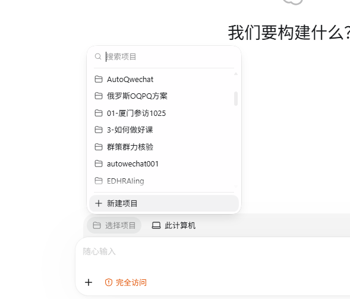
① 点击“选择项目”，在菜单底部选择“新建项目”。已有项目可直接选择。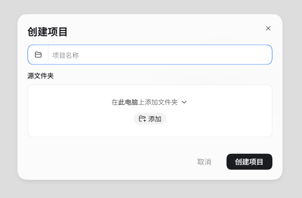
② 填写项目名称，在“源文件夹”中点击“添加”。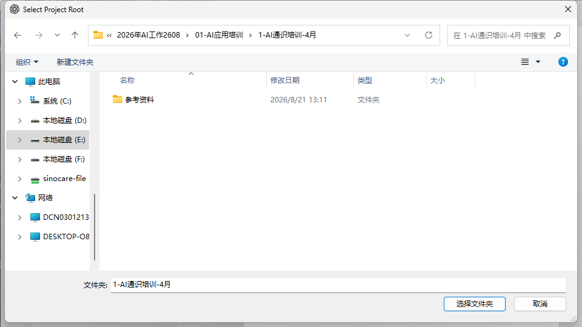
③ 选择本次工作专用文件夹，再点击“选择文件夹”，返回项目对话框核对并创建。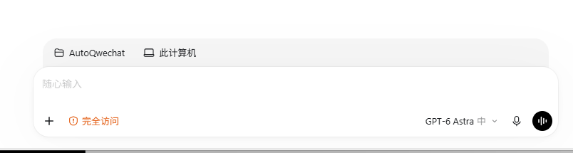
④ 新任务输入区会显示所选项目与“此计算机”。此图展示选中项目后的状态，不证明前三张图的创建过程已成功完成。
4. 个性化：直接、务实，但保留必要解释
进入“设置 → 个性化”，查看“基础风格和语气”。截图当前显示“专业可靠”，其他选项未展开，不能据此确认存在“务实”选项。希望回答直接、务实，可在自定义指令中明确偏好；截图下方分别提供ChatGPT与Codex指令入口，应按使用模式选择。风格设置改变表达方式，不提高模型能力。下面是一份建议文本，并非已经替你修改设置。
请直接、务实地回答。先给结论，再给必要依据和可执行步骤。避免客套、夸赞和重复总结。明确区分事实、推测与建议；缺少关键资料时直接指出。发现我的假设有问题，请说明理由。涉及数据和重要决策时保留来源、限制与核验步骤，不要为了简短省略风险。
07 · 个性化与回答风格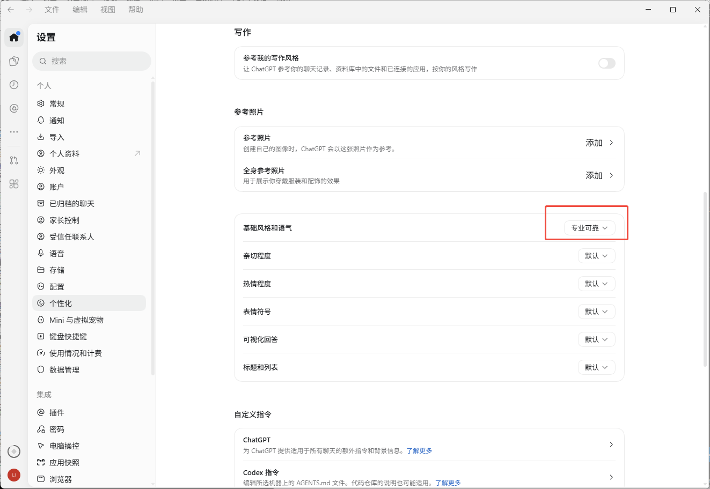
红框为截图自带标注。除基础风格外，还可看到亲切程度、热情程度、表情符号、可视化回答、标题和列表等选项；按偏好调整，不必全部修改。“参考我的写作风格”会使用更多个人上下文，是否开启应结合数据授权。
5. 常用设置，先认识这几项
- 通用：确认Enter发送还是组合键发送；了解任务执行中追加消息是立即调整还是排队。
- 外观与快捷键：调整主题、字体和常用按键，优先保证阅读清楚、减少误发送。
- 通知：选择任务结束时的提醒方式，方便处理较长任务。
- 记忆与个人指令：知道哪些偏好会跨对话沿用；是否开启须结合企业政策，不将敏感业务数据当作通用偏好保存。
- 浏览器与Computer Use：查看允许访问的网站和应用；上传、下载及修改权限分别核对，不为图方便全部放开。
- 归档对话：整理已完成任务，知道在哪里恢复；归档不等于删除。
08 · 设置目录与常用选项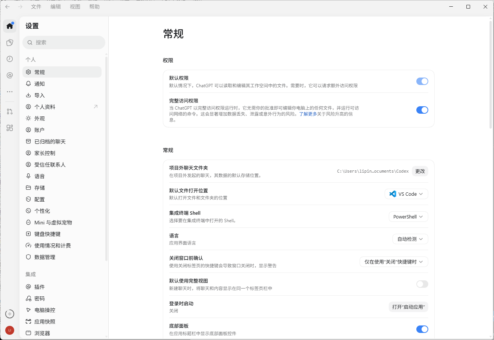
本版本分类名称为“常规”。可见项目外聊天文件夹、默认文件打开位置、集成终端、语言和关闭窗口前确认等设置。左侧还有通知、外观、键盘快捷键、使用情况和计费、数据管理、插件、电脑操控与浏览器等入口；未展开的分类不代表已逐项验证。
企业工作区：保留必要的权限意识
组织与数据治理
- 工作区、成员角色与管理权限
- 企业级数据安全和合规配置
- 组织管理Skill、Plugin与应用连接
- 特定操作可要求成员授权或管理员批准
模型选择的小原则
- 日常表达：优先低成本、快速交互的体验
- 复杂分析：选择较高思考强度
- 需要执行工具：进入Work或Codex
- 先确定任务和权限，再考虑模型名称
桌面端的4个操作技巧
TIP 01
快捷呼出
可在桌面端设置快捷入口；注意不同系统、版本及快捷键冲突。
TIP 02
截图直接问
将软件异常、图表和界面截图交给AI解释；先遮盖敏感资料。
TIP 03
用项目承接长期工作
让相关文件、历史对话和项目目标保持在相同工作上下文。
TIP 04
语音梳理问题
复杂的现场问题可先用口述整理再形成可检验的任务描述。
权限检查：讲师课前在实际Enterprise账号中确认Chat、Work、Codex、Skills、Plugins、Browser Use、Computer Use是否开放。不要把某个演示账号看到的能力当作所有人都有。
讲师操作：现场展示新桌面端Chat/Work切换，再从顶部菜单切到Codex；简要说明Chat和Work历史在Recents中，Codex有独立记录。不要花太多时间解释模型版本号。
官方参考：工作方式 · 模型与思考程度 · 项目与文件夹 · 个性化 · 桌面端设置
02 · PROMPT LAB
不背模板，学会与AI协作
参考吴恩达《AI Prompting for Everyone》的现代提示词理念：清楚表达、提供所需背景、通过对话迭代，并且检查结果。简单任务不需要写得很长。
核心判断：提示词不是越长越好。任务越复杂、风险越高，越需要交代数据来源、判断标准和验收条件。
一条业务任务，试三种表达方式
① 选择任务和表达层级
互动实验你可以直接修改下面的Prompt，练习用自己的语言表达。
② 看看这条指令具备什么
以下是网页本地的文字检查，不是AI模型评分。
③ 下一轮可以怎样追问？
四步就够用
STEP 1 · 任务直接说目的
先问“我要获得什么结果”，而不是先写角色扮演和长篇设定。
STEP 2 · 上下文必要时补资料
用业务文件、字段含义、背景、规则给AI足够的判断依据。
STEP 3 · 迭代不满意就继续改
把问题指出来，让AI沿着当前工作修正，不必反复从零写Prompt。
STEP 4 · 验证按风险分层复核
普通文案重在可读性；财务、质量和合规判断必须回到原始证据。
借鉴吴恩达课程：AI不只回答问题
FIND INFORMATION
找信息与核实来源
区分模型已有知识、联网搜索与Deep Research；追问出处和数据时效。
THOUGHT PARTNER
把AI当思考伙伴
让AI反驳你的方案、给不同角度，并指出假设中最薄弱的一环。
CREATE & BUILD
让AI帮助创造
描述需要的成果，利用文本、图表或Codex做原型，再根据实际体验迭代。
讲师练习：让全员选择一个工作任务。先用一句话输入ChatGPT，再要求它解释依据或补充条件。请1位学员口头比较“第一次回答”和“第二次回答”的差别。建议14分钟。
03 · FILES & DATA
从原始文件到业务成果
真实使用中，不需要手工把Excel逐行复制给AI。先准备好数据与业务口径，再上传文件、提出目标并核对结果。
课堂主案例 · MES生产日报
通过一份完全模拟的日报，理解产量、达成率、直通率、异常分类。以下数据汇总在网页中真实计算，不是调用ChatGPT。
讲师操作：在真正的Enterprise Chat中上传这份CSV，让AI说明数据质量、生成趋势图和报告摘要。要求学员从原文件核对总产量与达成率公式。
从数据到结论的三个关口
- 先检查缺失、重复、字段名称
- 指标要有明确分母和计算口径
- 报告结论必须标明依据、未知项和限制
本页展示的是用内置模拟数据进行的规则计算；不会自动分析学员自己的Excel。实际工作请在批准的ChatGPT环境上传文件。
模拟日报 · 浏览器即时汇总
ChatGPT分析指令
专题互动实验｜Deep Research制造业调研
独立练习页从调研目标、研究计划、证据质量到报告验收，练习如何识别可信来源；提供视觉检测、预测性维护、3Q验证三个模拟选题。网页不执行真实研究。
课堂建议：本章节只现场展示“任务单”和“计划审核”约6–8分钟，完整研究交给课后学员，不应在120分钟主课中等待深度研究实时完成。
04 · REUSABLE WORKFLOWS
Skill、MCP、Plugin、CLI
先看 What、Why、How to Use 和 How to Build，再探索公开工具推荐与企业内部自建方向。
入门四问｜What · Why · Use · Build
每种能力先回答四个问题：是什么、为什么要用、现成工具怎么使用、自己如何开发。普通学员重点看使用步骤；AI 先锋和 IT 可按开发步骤进一步实践。
一句话区分：Skill 负责“怎么做”，MCP 负责“怎么连接工具”，Plugin 负责“把现成能力提供给用户”，CLI 负责“用命令执行”。它们并非每项任务都要同时使用；任何外部连接仍需账号与企业权限。
开发与使用的区别：公开 Skill、MCP、Plugin 优先复用；MES / CAPA / 3Q 等企业专用流程仅作为内部自建需求，不属于下方公开工具推荐。生产数据和系统接入须先经过企业授权。
把它们放到同一条工作流中理解
业务需求→Agent规划→Skill执行规范→Plugin / MCP工具→成果核验
这是概念关系图，不代表每个任务都必须使用所有组件。
如何选型？先看任务，再看技术
一条工作流理解关系
业务目标：交期风险跟踪→App 读授权台账→Skill 分类与汇总→AI 生成报告→人工确认外发
MCP 是工具接入可选的技术协议，不是每条流程都必须存在；CLI 是本地脚本与开发任务的另一种执行入口。
MCP 到底暴露了什么能力？
Tools · 可调用动作
例如“读取某条演示工单”“搜索仓库 Issue”。真实写入工具必须受权限和审批控制。
Resources · 可提供资料
例如文档内容、元数据或特定资源引用。不是所有 MCP Server 都提供 Resources。
Prompts · 可复用提示模板
例如“按预设模板检查模拟维修记录”。不同客户端支持程度可能不同。
推荐原则：这里只推荐已经公开发布、能找到实际安装入口或运行方式的现成插件、Skill 和 MCP。自建 MES 日报、CAPA、3Q 或公司业务系统连接，不属于本推荐目录。公开资源仍需确认账号、系统兼容性和公司审批。
公开推荐 01｜ChatGPT 可搜索的现成插件 / Apps
这一组都是插件目录中已发布的具体产品。可以先查看功能与权限，再按工作区政策安装并连接账号；“公开发布”不等于每个企业账号均有权限。
公开推荐 02｜已经发布、可以安装使用的 Skill
明确区分平台：ChatGPT 的 Skill Creator 属于 ChatGPT；下面的 PDF、DOCX、XLSX、PPTX 和 Webapp Testing 是 Anthropic 公开的 Claude/Claude Code Skills，可以在受支持的 Claude 环境中使用，并非 ChatGPT 内置插件。
公开推荐 03｜已有实现、可以部署的 MCP Server
这四个均有公开项目、安装说明或可用服务端点。它们需在兼容的 MCP 客户端或开发环境中配置，不等于可在 ChatGPT 网页端无条件一键安装。
平台区别：ChatGPT 插件在 ChatGPT 插件目录中查看并按权限安装；Claude Skills 用 Claude/Claude Code 的对应插件市场安装；公开 MCP Server 需在支持 MCP 的客户端或服务器环境配置。
Anthropic Skills 市场安装说明 ↗
企业内部自建方向（与公开资源推荐分开）
以下六项仅是企业内部自建需求，不是现成推荐，不属于公开发布、可直接下载的 Skill / MCP / Plugin，也不属于上方推荐清单。要在实际公司环境落地，需业务部门定义规则与验收标准，IT / AI 先锋开发和评估权限。
建议路径：高频、固定流程 → 设计内部 Skill；需实时读取 MES / QMS / ERP 等系统 → 由 IT 评估自建 API / 只读 MCP；跨部门分发和使用权限管理 → 经工作区批准后封装企业内部插件。任何内部场景都不能按现成工具宣传。
从第一次使用，到团队复用的三步
① Chat先跑通一次
比较这两份模拟 SOP，列出工艺参数和检验标准的差异，并标注文件位置。
观察输出是否完整，不急着配置工具。
② Skill沉淀固定规则
验证版本 → 逐项比对 → 变化分类 → 证据定位 → 待确认事项；固定表头。
用正常、异常、缺失文件三种样例验收稳定性。
③ Plugin / App需要时再连接资料
在已获批准的文档范围内检索版本，执行 Skill 并形成待复核结果。
安装和访问权限另行授权；不自动审批或发布。
上手步骤与安全检查
普通学员：先试一个插件
- 打开 ChatGPT 左侧 Plugins，搜索符合工作需求的插件或 Skill。
- 阅读它包含的 App / Skill、权限要求与账号连接说明。
- 使用虚构或脱敏数据，先测试只读检索及引用是否准确。
- 重复业务需要稳定流程时，再尝试用 Plugin Creator 建 Skill 并测试，不急于共享全员。
实际菜单和可用能力受版本、组织策略及管理员许可影响。
AI 先锋 / IT：自建 MCP 的前置条件
- 明确业务目标、数据所有者和现成 App 无法满足的原因。
- 设计最小权限：白名单字段、只读工具、认证、脱敏与审计日志。
- 在测试环境用假数据验证正确性、异常处理和越权防护。
- 完成安全评审、管理员发布与持续监控，再考虑写入审批。
生产系统、PLC、工控软件及个人敏感信息不作为现场练习对象。
安全底线：安装插件不等于获得公司系统的权限；未知插件不能接触患者、客户、员工、配方或工艺机密；网页和文件中的指令也可能是提示注入。重要数字回查源文件，外发、修改、审批和设备控制必须经过人工与企业授权流程。
课堂问答：要让 AI 自动读取 QMS 并关闭 CAPA，现在能直接配置吗？
点击展开参考答案
不能直接配置。先判断是否真需要跨系统连接；读取需管理员及数据所有者授权，关闭 CAPA 涉及质量审批，不能以“模型建议”代替受控流程。现场仅演示虚构数据的只读查询和待审批清单。
讲师建议（保持本节 12 分钟）：概念与选型 3 分钟 → 虚构 SOP Skill 演示 5 分钟 → 精选 2–3 个推荐案例 2 分钟 → 权限安全与问答 2 分钟。其他推荐卡片留给学员课后点击展开，避免课堂变成安装教程。
Skill实战 · SOP差异审查
一次性Prompt
比较上传的两版SOP，列出重要变化。
优点：足够简单，适合临时分析。限制：不同人员可能使用不同判定规则。
沉淀为Skill
输入：新旧SOP。\n步骤：确认版本→逐章比对→重点检查工艺参数与检验标准→标记证据→输出差异清单。\n限制：不得自动批准文件变更。
适合：高频重复的专业审查任务，且需要一致的输出标准。
讲师重点：用一句话区分「Skill告诉AI怎么做」「MCP帮助AI调用什么工具」「Plugin把技能和连接组织成可安装能力」「CLI让技术工作通过命令执行」。避免承诺真实系统可直接连接。
专题互动实验｜可复用SOP审查 Skill
含完整 SKILL.md点击文件结构理解Skill构成，并通过两份虚构SOP找出5项受控变更，核对证据、风险假设和人工审批边界。
05 · WORK & COMPUTER USE
让AI从回答走向执行
这里展示一个逐步执行的Agent任务流程。网页模拟的是教学步骤，不会真的登录网站、访问物流系统或操作电脑。
供应链公开资料收集Agent
流程演练示例任务：收集三家公开物流服务商的服务信息，形成来源可核对的对比表。
这个任务涉及哪些层次？
- Work：组织多步骤信息研究和交付
- Browser Use：在授权范围内操作网页
- Computer Use：在授权范围内操作本地桌面应用
- Plugin/MCP：通过具备权限的集成接口调用服务
- 人工审批：在发送、修改或高风险动作前确认
Cloud Browser、桌面内置浏览器、Browser Use和Computer Use各有不同权限边界；功能还受管理员策略及当前产品版本限制。
讲师操作建议：用讲师专用的企业测试账号在真实Work里执行一次公开资料收集任务。网站流程演练用于讲解逻辑或现场网络异常时备用。不要现场登录真实MES、ERP或HR系统。
专题互动实验｜Work与Computer Use
权限判断 + 模拟审批针对公开资料收集、模拟生产日报和设备在线核查，练习多步任务计划、浏览器与电脑操作边界、需审批动作及交付验收。课程不访问真实企业系统或设备。
讲师建议：现场选一个公开数据任务，示范“可以读取→审批前停止→人工确认后继续”的区别。设备场景仅作模拟，禁止现场调试或修改工控设备。
06 · CODEX AI CODING
不会写代码，也可以设计实用工具
课堂重点不是讲编程语法，而是演示“描述需求 → 理解数据 → 编写工具 → 运行测试 → 修复问题”的完整过程。下面的CSV合并器是一个真正在浏览器里运行的程序，不依赖后端。
从对话到工具 · Codex示范任务
现场展示顺序
- 打开Codex，选择空白练习目录
- 粘贴任务需求，让它先检查样例数据
- 观察创建文件、运行测试与修复报错
- 在真实目录中运行工具（只用模拟文件）
- 再要求生成简易Web页面，观察功能迭代
准备3份模拟采购订单CSV
本例模拟不同人员提交的文件，包含一组重复订单和一项缺失交期。
本页演示工具仅支持同一字段结构的CSV（Excel可先另存为CSV）。真实业务需另外处理列名变化、编码、日期格式和数据权限。
动手体验 · 可运行的CSV批量合并器
Excel批量处理工具 · Browser Demo
真实执行：浏览器本地读取CSV、合并、识别重复键及缺失交期、生成下载文件。文件不会上传服务器。
尚未加载数据。可先点击“载入内置模拟订单”。
讲师技巧：先现场运行网页工具，让学员看到真实输入与输出；接着切到Codex，说明“这个可运行的小工具也可以由AI根据自然语言需求帮助实现”。切勿将本地示范脚本说成Codex正在后台生成。
代码生成之后，还要验证什么？
① 数据一致性
行数是否正确
合并前后行数、列名、重复项数量能否对账。
② 数据安全
不要覆盖原始文件
工具先输出新文件；正式批处理前应备份、审批、记录日志。
③ 可重复运行
测试不同输入
加入空值、错误格式和重复项，看工具是否稳健。
专题互动实验｜Codex从需求到验收
真实执行6项测试5轮可复制的Codex开发任务指令、浏览器本地CSV异常挑战、6项可执行测试和标准验收条件。教学脚本与真正AI Coding环境明确分开。
07 · TIPS & TRICKS
15个马上能用的AI效率技巧
不需要全部记住。每次学会两到三个，直接带回自己的工作中。点击卡片中的“查看做法”可获得场景、简短指令和注意事项。
AI TOOLKIT / PRACTICAL TIPS
选一个小技巧，今天就用起来
每张卡片都给出适用场景、可复制的做法和注意事项。按主题选择，比一次记住全部更有价值。
讲师现场精选：①截图提问，②让AI先问关键问题，③同一对话迭代，④Codex先读后改。总计约10分钟，其他技巧放到自学模式。
08 · BUSINESS PLAYBOOK
30个真实业务需求 · 简体中文操作指南
按照原始需求整理六部门30个案例。每个案例均包含实施可行性、数据与权限条件、ChatGPT详细步骤、可选进阶路径、预期成果和验收要点。每个部门的案例以卡片展示；点击卡片查看完整实施教程。课堂每部门可挑一个代表案例讲解，其余供课后自行查阅。
所有“Chat怎么做”“Agent怎么升级”是基于盘点需求提出的教学方案，不代表已经验证企业系统连接。为降低公开发布风险，网页不包含原始Excel、内部人员资料、真实生产/人资数据；真实系统使用前必须审批。
课堂每部门选取一个代表性案例讲解；其余案例在网站中提供完整分步教程，供课后继续实操。涉及系统接口或生产环境的进阶方案须经业务与IT共同评估。
09 · RESOURCES & DEPLOYMENT
课后资源与发布说明
学习资源优先使用官方文档。功能变化快，网页上的产品说明以2026年11月5日可查询的官方资料为基础；正式授课前仍应核对企业工作区。
上线到GitHub Pages：四步
- 在GitHub创建一个仓库，例如
chatgpt-enterprise-academy。 - 将
index.html 和 samples/ 一起放到仓库根目录。 - 进入
Settings → Pages → Build and deployment，选择 Deploy from a branch、main、/(root)。 - 发布后通过仓库的Pages地址访问，检查下载链接和所有课程章节。
公开仓库与GitHub Pages并非企业私有内网。发布前确认公司许可，移除任何未经审批的内部信息。若课程需包含非公开数据，应使用企业认可的访问受控平台。
讲师上线前检查